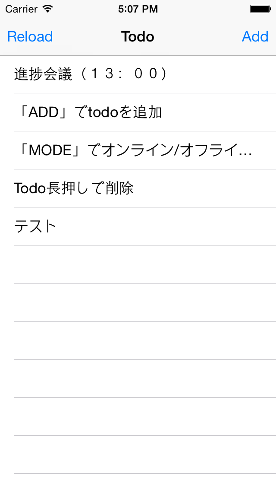
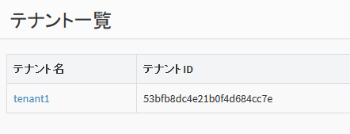
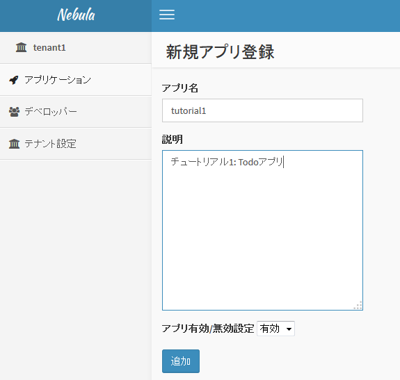
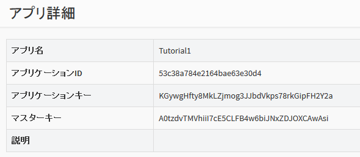
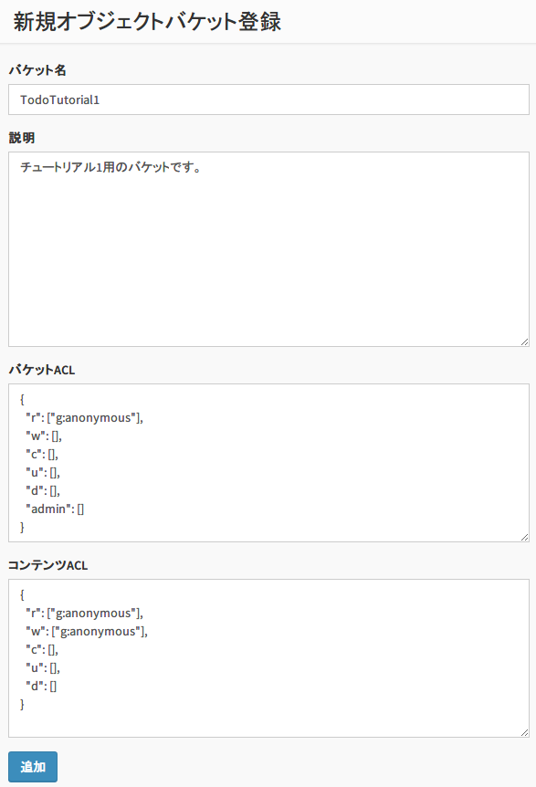

2. チュートリアル1 : TODOアプリ (Objective-C版)¶
最初のチュートリアルでは、NEC BaaS iOS SDK を使用した簡単な Todo アプリ(iOSネイティブアプリ)について説明します。
{kind=link}
- Todo 項目を入力して追加したり、削除することができます。
- データは BaaS サーバ上に保存されます。データは JSON で表現し、BaaS サーバの「オブジェクトストレージ」に格納されます。
- 本アプリは iOS 端末上で動作するネイティブアプリで、Objective-C で作成します。
なお、本チュートリアルでは、簡単のためユーザ認証やアクセス制御は一切 行いません。ユーザ認証を行うチュートリアルは、チュートリアル2以降を参照してください。
2.1. 新規アプリケーションを作成¶
まず、BaaS サーバのデベロッパコンソールにログインし、新規アプリケーションを作成します。
ブラウザを開き、デベロッパコンソールにアクセスし、 ID とパスワードを入力してログインしてください。

ログインが完了すると、テナント名の一覧が表示されます。ここに表示されている テナントID は後ほど使用しますので、メモしておいてください。
使用するテナントをクリックします。
「アプリケーション」をクリックし、「追加」ボタンを押して新規アプリケーションを作成します。
ここではアプリ名と説明文を上記のように入力します。
アプリの作成が完了すると、アプリの詳細情報が表示されます。 ここで表示される「アプリケーションID」「アプリケーションキー」は アプリケーションの認証に使用する秘密情報です。 この２つは後ほど使用しますので、メモしておいてください。
2.2. バケットの作成¶
Todo 情報を格納するための「バケット」を作成します。
画面左の「オブジェクトバケット」⇒「追加」をクリックして、バケットを追加します。
バケット名は "TodoTutorial1" としてください。
また、バケットのアクセス権限を変更し、誰でも(anonymousユーザ)バケットを読み書きできるようにします。 (デフォルトでは、認証ユーザしかバケットを読み書きできないようになっています）
「バケットACL」の r の行が "g:authenticated" となっていますので、 これを "g:anonymous" に変更してください。
また、「コンテンツACL」の r と w の行が "g:authenticated" となっていますので、 こちらも "g:anonymous" に変更してください。
2.3. サンプルコードの変更¶
チュートリアル1のサンプルコードを設定し、実際に動作させてみます。
チュートリアルの NebulaTutorial1/Config.h ファイルを修正します。
// テナントID
#define TENANT_ID @""
// アプリケーションID
#define APP_ID @""
// アプリケーションキー
#define APP_KEY @""
// エンドポイント URI
#define ENDPOINT_URI @"https://baas.example.com/api/"
- TENANT_ID には テナントIDを設定してください。
- APP_ID にアプリケーションIDを設定してください。
- APP_KEY にアプリケーションキーを設定してください。
- ENDPOINT_URI には、BaaS API サーバの URL を指定してください。パスの /api/ まで必要なので注意してください。
2.4. サンプルの実行¶
Xcode から tutorial1 ディレクトリを開き、ビルド・実行してください。
Add ボタンを押すと、Todo を追加する画面が表示されます。Done を押して追加します。
Todo を左スワイプすると、削除となります。
また、Reload ボタンを押すと、サーバからデータをリロードします。